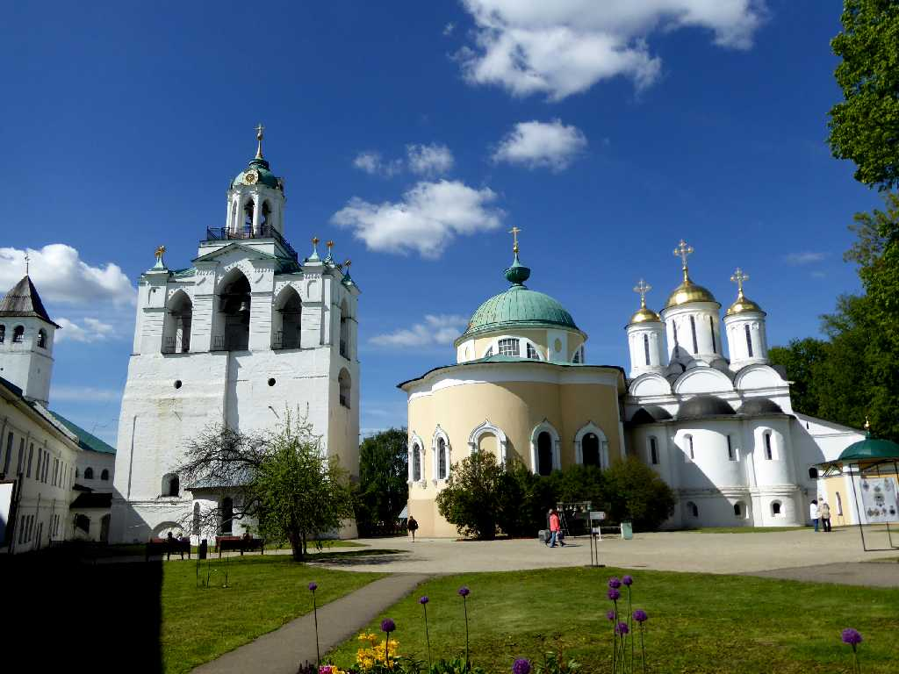
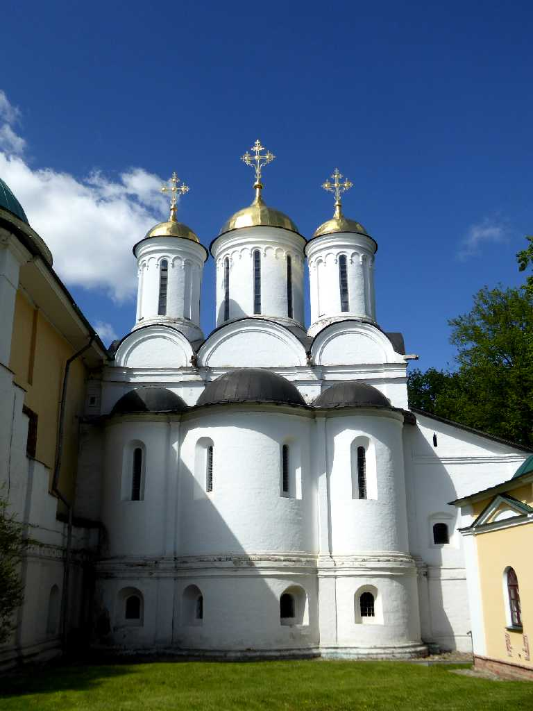
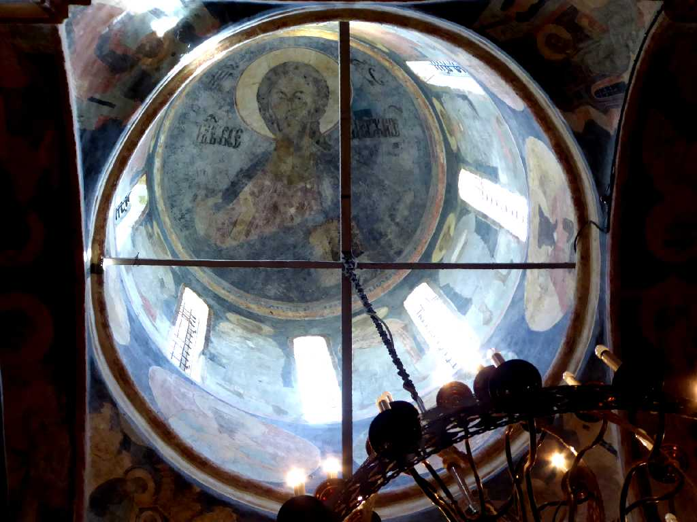
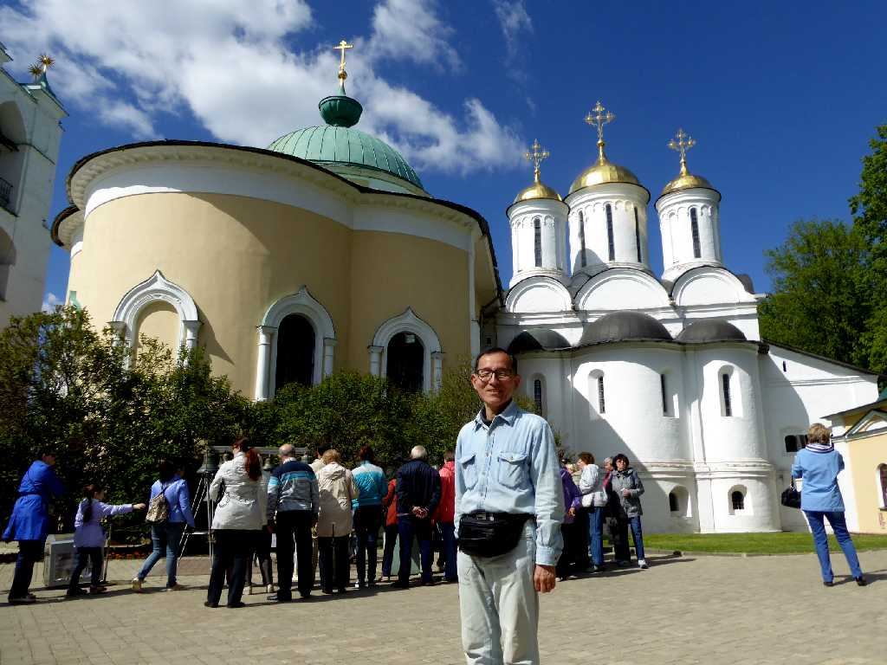

Spassky Monastery Yaroslavl
ヤロスラヴリの救世主修道院

Spaso-Preobrazhensky Cathedral Spassky Monastery
救世主修道院の救世主顕栄大聖堂は１２２４年に創られた聖堂の基礎の上に１５１６年に再建されたヤロスラヴリで最も古い建物の一つ

Fresco Spaso-Preobrazhensky Cathedral

June 5 2017 Spassky Monastery